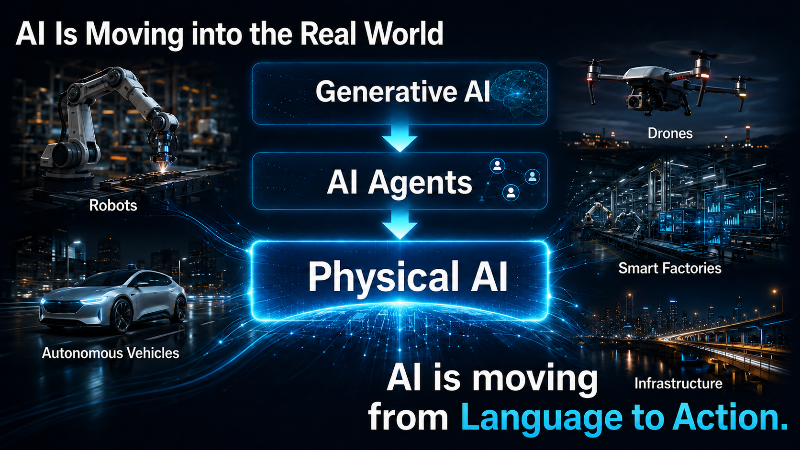
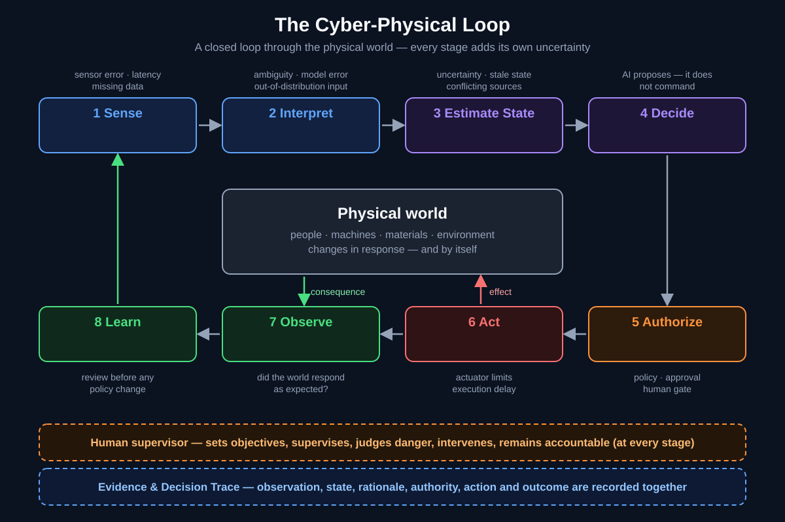
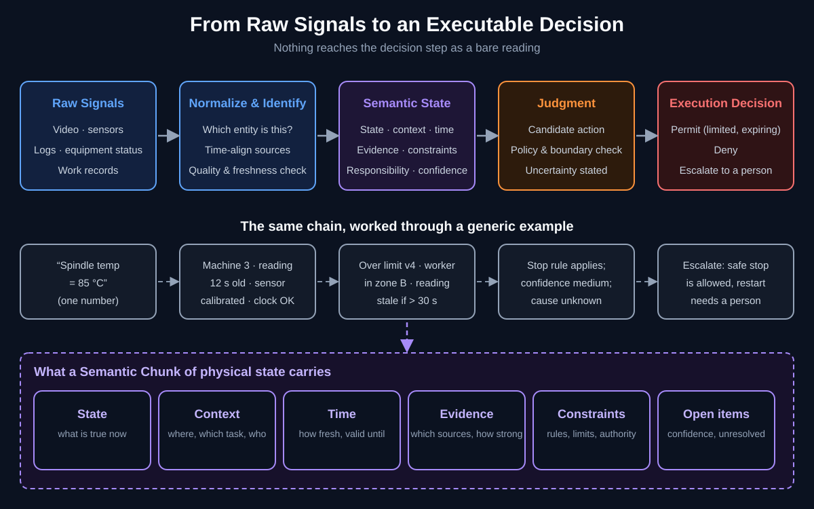
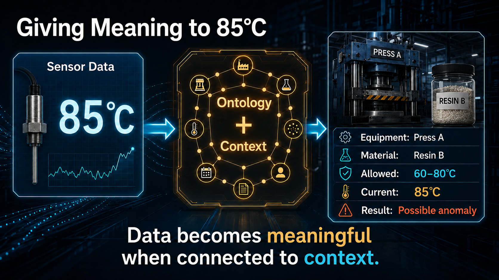
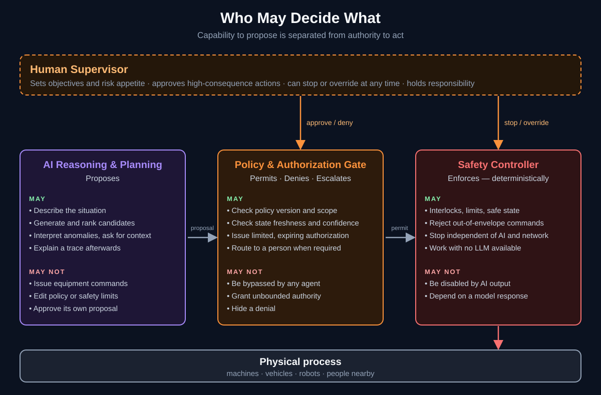
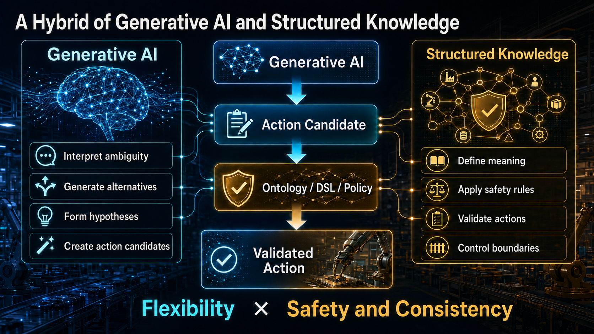
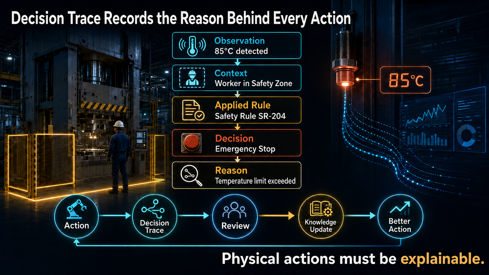
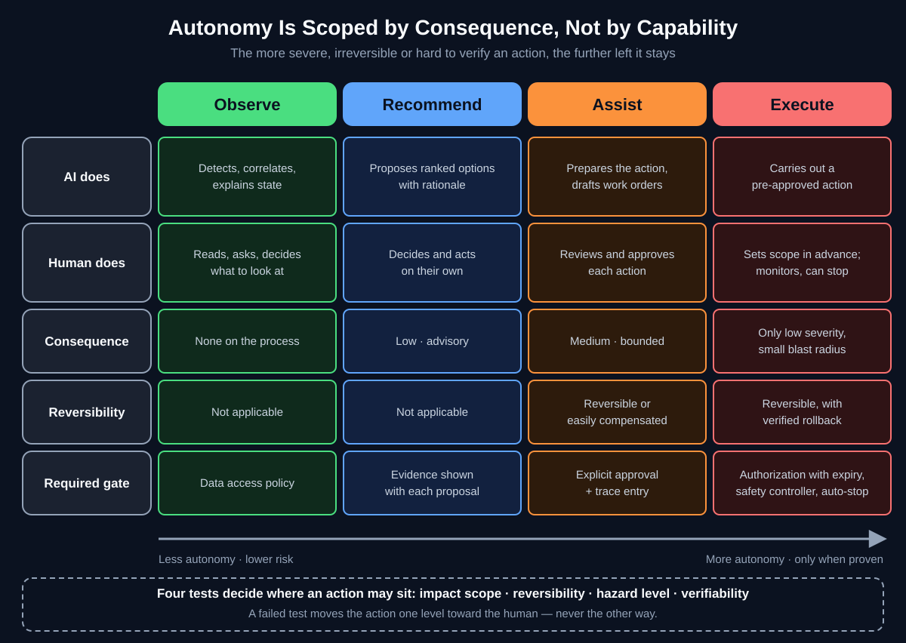

Physical AI is not defined by whether an AI can act in the real world. It is defined by whether perception, decision, execution, safety, and learning can be connected as a traceable and governed cyber-physical loop.
A robot that moves is not yet Physical AI in any sense worth building on. What matters is the loop around the motion: observations that may be wrong, a state estimate that may be stale, a decision that someone must be entitled to make, an action that changes the world, and a result that flows back into the system. Chinoba treats Physical AI not as a model, and not as a body, but as a governed feedback loop with the physical world — one that is designed for uncertainty, bounded by safety, supervised by people, and recorded well enough to be learned from.
The new English practical guide leads this line of inquiry. Below it are the Chinoba books, videos, and essays that build the Semantic Digital Twin picture used throughout this page.
The English practical guide behind this page's architecture — how Ontology, Knowledge Graph, DSL, and Decision Trace combine inside Chinoba PF to build the Semantic Digital Twin that lets Physical AI understand the real world and act on it safely.
View on Amazon → ASIN B0HFH4QXYS · Kindle · Masao WatanabeNeighboring practical guides that build the Ontology, Knowledge Graph, DSL, Decision Trace, and Trust Infrastructure this page draws on.
Visual introductions to Physical AI and the Semantic Digital Twin that lets it reason about the real world.
Long-form essays behind this page's argument — Physical AI, the Decision Trace Model, and the sensor-to-decision boundary.
Robotics gives AI a body. IoT gives it senses. Digital twins give it a model of the plant. Generative AI gives it language and flexible reasoning. Control systems give it dependable motion. Physical AI is none of these alone — it is the decision that sits among them and acts on matter, and the discipline of making that decision safe to take.

| Field | What it contributes | What it does not settle by itself |
|---|---|---|
| Robotics | Embodiment: sensing, manipulation, and movement. | Whether a given motion is authorized, or why this action was chosen over another. |
| IoT & telemetry | Continuous observation of equipment and environment. | What a reading means in context, and what, if anything, should be done about it. |
| Digital twin | A synchronized model for monitoring and simulation. | Operational meaning, constraints, and who may act on the information. |
| Generative AI & LLMs | Interpretation, dialogue, plan drafting, and reading exceptions in plain language. | Guaranteed correctness, real-time response, or enforcement of safety limits. |
| Control & safety systems | Deterministic, verified behavior inside a defined envelope. | Interpreting a novel situation, or choosing between competing goals. |
The defining feature is not the body but the consequence. A language model that errs produces a wrong paragraph that can be edited. A system that errs while moving a load, opening a valve, or re-routing a vehicle produces an effect that may be partly or wholly irreversible.
Physical AI is therefore best described as decision-making whose output is a change in the physical world — together with everything needed to make that change appropriate.
Observation, inference, and action all alter the environment they depend on, and the altered environment is what the system observes next. Physical AI is a closed loop. Mistakes compound through it, and learning flows through it.
A model can be wrong
and be corrected.
An action can be wrong
and stay done.
Eight stages connect a sensor to a consequence and back again. Each one contributes its own error, delay, or ambiguity — and each one is a place where responsibility must be made explicit rather than assumed.

| Stage | What happens | Where uncertainty, delay, or people enter |
|---|---|---|
| 1 · Sense | Sensors, cameras, logs, and equipment signals capture the world. | Sensor error, calibration drift, sampling delay, missing or out-of-order data. |
| 2 · Interpret | Raw signals become detections, events, and descriptions. | Model error, ambiguity, inputs unlike anything seen in training. |
| 3 · Estimate State | Interpretations are fused into a current picture of entities and conditions. | Stale or conflicting sources; confidence must be carried forward, not discarded. |
| 4 · Decide | Candidate actions are generated, compared, and ranked. | AI reasoning is useful here and fallible here; it proposes but does not command. |
| 5 · Authorize | Policy, scope, and approval determine whether an action may proceed. | Human approval is designed in for high-consequence cases; ambiguity routes to a person. |
| 6 · Act | An authorized command reaches an actuator, a vehicle, or a work order. | Command latency, actuator limits, and the independent safety controller that can refuse. |
| 7 · Observe | The effect on the world is measured. | Did the world respond as expected? Delayed or partial effects can mislead. |
| 8 · Learn | Outcomes update state models, thresholds, and procedures. | Changes to policy are reviewed by people before they take effect. |
The physical world does not arrive as clean data. Plan for these conditions from the start rather than patching for them later:
A one-way pipeline from sensor to actuator can only be as good as its first guess. Closing the loop means checking whether the action had the intended effect, recording the gap, and using that gap to correct the next estimate.
It also means that stopping is a valid outcome of every stage. A loop that can only continue is not under control.
A temperature value, a video frame, or a log line is evidence about the world, not a statement of it. Before anything is decided, raw data has to be tied to an entity, a time, a source, and the rules that apply — in short, turned into state that a decision can lean on.

What is believed to be true now: the entity, its condition, and its operating mode.
Where it is, which task is underway, who and what is nearby, and which relationships matter.
When it was observed, how fresh it is, and until when it can be relied on.
Which sources support it, how strong they are, and how to retrieve them again.
The rules, limits, and permissions attached to this state — and who owns them.
What is uncertain, conflicting, or unresolved. Unknowns are kept visible, not smoothed over.
In document work, a Semantic Chunk is a unit of meaning tied to its evidence, rather than a slice of text cut for search. The same idea carries into the physical world: the unit is no longer a passage but an event, a state, a work step, or a constraint, each linked to the sources that justify it.
What makes it useful is the linkage. A chunk says what holds, for which entity, over which interval, on what authority, and with what degree of confidence — so a later decision can be checked against it.
Handing a model a stream of readings invites it to supply the missing context by guessing. The guess may be plausible and still wrong: another machine, an outdated rule, a sensor that has been silently offline.
A semantic state layer puts the missing context in as data, marks what is unknown, and lets the downstream gate refuse to proceed when the state is not good enough to act on.
The same number can be routine or urgent. It becomes one or the other only when it is placed against the equipment, material, allowed range, and rule that apply to it.

A Semantic Digital Twin is where this state lives as a coherent whole: entities, relationships, current condition, capability, constraints, and change over time — not a copy of telemetry, and not a 3D model alone.
LLMs and other AI models are good at the parts of a physical operation that are ambiguous and open-ended. They are the wrong place to keep the parts that must never be ambiguous. The design task is to draw that line deliberately, and to make the line something an AI cannot move.
These are contributions to judgment. They produce candidates, never authorizations.
These stay verifiable and keep working when a model is slow, wrong, or unavailable.

| Concern | AI reasoning | Deterministic control |
|---|---|---|
| Time scale | Seconds to minutes; response time varies. | Milliseconds; response time is bounded and tested. |
| Novel situations | Can generalize, and can also be confidently wrong. | Does not generalize; behaves as specified or stops. |
| Verifiability | Behavior is sampled and evaluated statistically. | Behavior can be analyzed against a specification. |
| Role in authority | Proposes; cannot approve its own proposal. | Enforces limits; cannot be disabled by a proposal. |
| When it is unavailable | Operation degrades to a simpler, safer mode. | Safe state is reached without it. |
A proposal from a model becomes a validated action only after knowledge, context, and policy have checked it — and a validated action still needs limited, expiring authorization before it reaches the safety controller.

It is tempting to describe a person as whatever the automation cannot handle. That framing makes people the last resort and gives them the least information at the worst moment.
A person in a Physical AI system sets the purpose, supervises the operation, judges what counts as dangerous, intervenes, and answers for the outcome. The design should give them the state, the evidence, and the time to do that.
This is a pattern, not a product: six layers carry a signal toward action, and three cross-cutting responsibilities — supervision, evidence, and learning — attend every layer. What matters is who may talk to whom, and what has no direct path at all.
Upward, signals gain meaning: events become state, state becomes context for a proposal. Downward, authority narrows: a proposal becomes a permit, a permit becomes a bounded command, a command is checked against hard limits.
Meaning flows up.
Authority flows down,
and narrows as it goes.
The observation, the context it was read against, the rule applied, the decision taken, and the reason — recorded together and reviewed, so that the next decision can improve on the last.

Between an observation and an action lies a list of things that should be demonstrable, not merely likely. If one cannot be shown, the action does not proceed at its current level of autonomy — it moves toward a person, or does not happen.
| Requirement | The question | What must be demonstrable | If it cannot be shown |
|---|---|---|---|
| Observation reliability | Can the input be trusted? | Source health, calibration, freshness, and agreement between independent sources. | Treat the state as unknown; request another source or a person. |
| State-estimate uncertainty | How sure is the picture? | A stated confidence, with conflicts and gaps recorded in the state itself. | Lower autonomy to recommend-only; do not act on a guess. |
| Impact scope | What could this change? | Affected entities, people, and downstream processes identified before execution. | Narrow the action, or escalate for wider review. |
| Authority & approval | Who may allow this? | A current policy, a named approver where required, and an authorization with limited scope and expiry. | Deny; do not substitute capability for permission. |
| Safety constraints & stop conditions | What bounds it? When does it halt? | Hard limits enforced outside the AI path, and explicit conditions that trigger a stop or safe state. | Do not execute; remain in the safe state. |
| Reversibility & rollback | Can it be undone? | A tested way to restore the prior state, or an explicit decision that none is needed. | Require human approval for each instance. |
| Human intervention path | Can a person step in? | A reachable stop and override, with enough state shown to judge. | Do not automate; keep the person in the loop. |
| Post-execution verification & evidence | Did it work, and can we show why? | A check of the physical result against intent, and a trace linking observation to outcome. | Flag as unverified; revoke the authorization and review. |
The range in which an AI may act on its own should be set not by how capable the model is, but by the impact of an action, how reversible it is, how dangerous it could be, and how well its result can be verified. Capability argues for a larger range; consequence decides it.

An action’s level is a property of the action and its context, not of the system. The same model might execute a low-consequence, reversible step and merely recommend a high-consequence one.
When a check fails — stale state, an expired authorization, a gap in the evidence — the action moves toward the person. Movement toward more autonomy is earned by evidence over time, never granted by default.
Five generalized design patterns show how the same structure applies across domains. They are illustrative patterns, not descriptions of particular companies, products, or deployments, and the boundaries will differ with each site’s risk assessment.
| Pattern | AI supports | May run automatically | A person approves | Evidence kept |
|---|---|---|---|---|
| Equipment maintenance support | Correlates vibration, temperature, and history; explains likely causes; drafts a work order. | Collecting additional readings; raising a low-priority notice. | Scheduling a shutdown, changing an operating setpoint, or releasing equipment after repair. | Signals used, rules and history consulted, confidence, approver, and the repair outcome. |
| Field work support | Retrieves the applicable procedure, checks it against current state, and answers questions on site. | Displaying the current procedure; logging completed steps. | Deviating from a procedure; any step that touches energized or hazardous equipment. | Procedure version, steps performed, who confirmed each, and deviations. |
| Quality inspection | Flags suspected defects and ranks them by likely severity. | Routing clearly conforming items; tagging uncertain items for review. | Rejecting or reworking a borderline lot; changing inspection thresholds. | Images and measurements, model version, confidence, reviewer decision. |
| Logistics & inventory | Predicts congestion, proposes routes and replenishment, reconciles counts. | Re-routing within pre-set aisles and priorities; routine replenishment orders within limits. | Changing priorities across a fleet; handling exceptions that involve people or hazardous goods. | Orders and routes, state at decision time, the policy applied, and exceptions. |
| Energy optimization | Forecasts load, proposes schedules and setpoints, explains trade-offs. | Small setpoint changes inside a safe band that can be reverted immediately. | Changes that affect comfort, safety systems, or contractual commitments; anything outside the band. | Forecast, setpoint history, constraints checked, and measured results. |
These are generalized patterns for discussion. What may run automatically in a given setting depends on the hazards, the regulations, and the evidence gathered for that site.
Autonomy is extended step by step, and each step has an exit criterion that evidence — not enthusiasm — has to meet. A step can be repeated or reversed if the evidence weakens.
Instrument the process; establish identity, time, and data quality. Exit: the current state can be described, with confidence, without guessing.
AI explains and recommends where consequence is low; people act. Exit: recommendations are accurate and explanations are useful to the people who read them.
AI decides silently alongside people; its decisions are compared with theirs and with outcomes, never executed. Exit: the gap is understood, including its failure cases.
Selected low-consequence, reversible actions run automatically, with expiring authorization. Exit: no unexplained incidents; rollback has been exercised.
Wider scope, always inside independent safety controls, human gates, and tested stop paths. Exit: interventions are rare, fast, and well-recorded.
Monitor drift, review traces, update rules and thresholds under human approval. Exit: none — the loop keeps running, and scope can narrow as readily as widen.
Runtime-oriented building blocks for Physical AI — decision execution, traceable action, graph-based world models, and signal analytics across sensor networks and the Semantic Digital Twin.
Supporting sketches for Physical AI, the Semantic Digital Twin, and the Chinoba PF knowledge stack. They extend the argument above rather than repeat it.
The maturity of Physical AI is not the maximization of autonomy. It is making action on the real world safe, explainable, and reversible. Perceive with doubt. Decide with evidence. Act within boundaries. Learn from every trace.